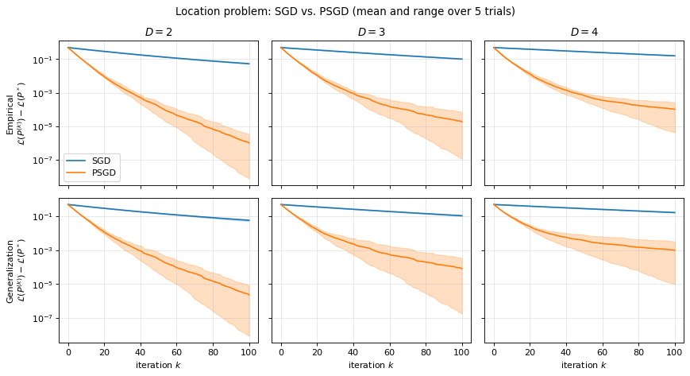
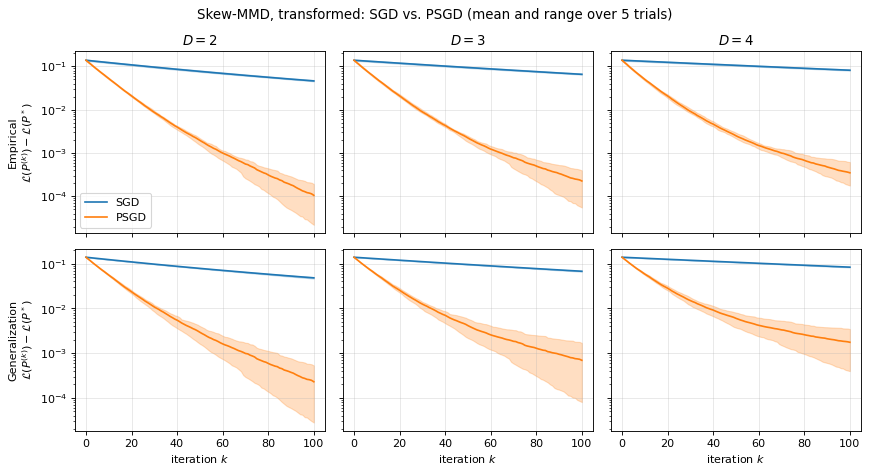
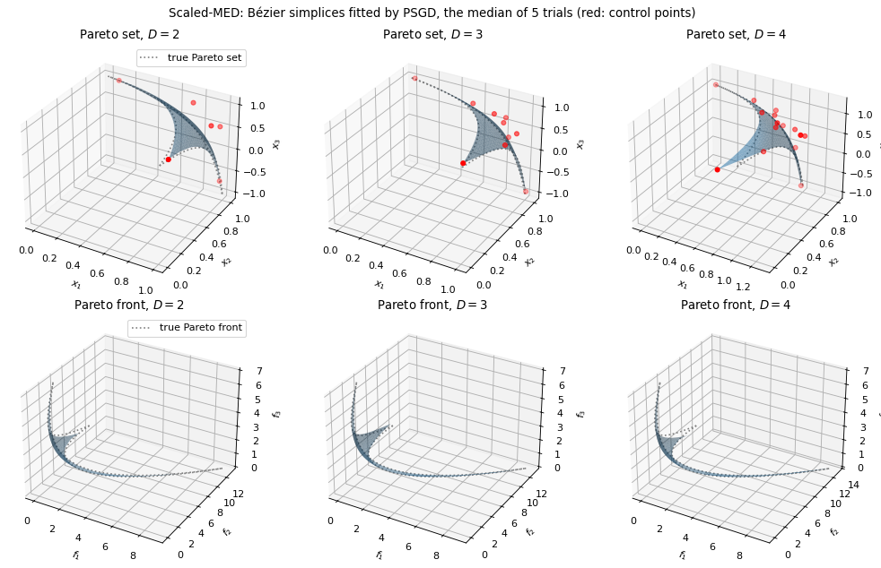
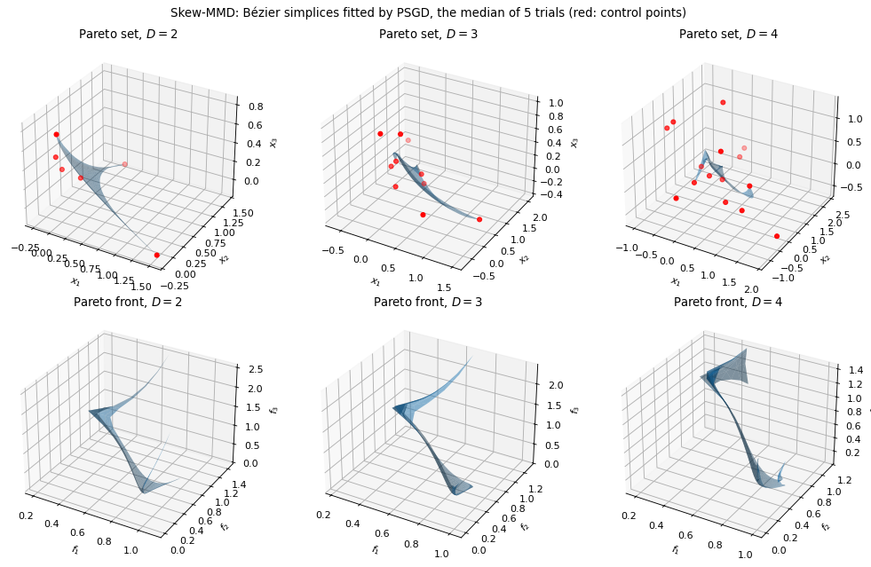
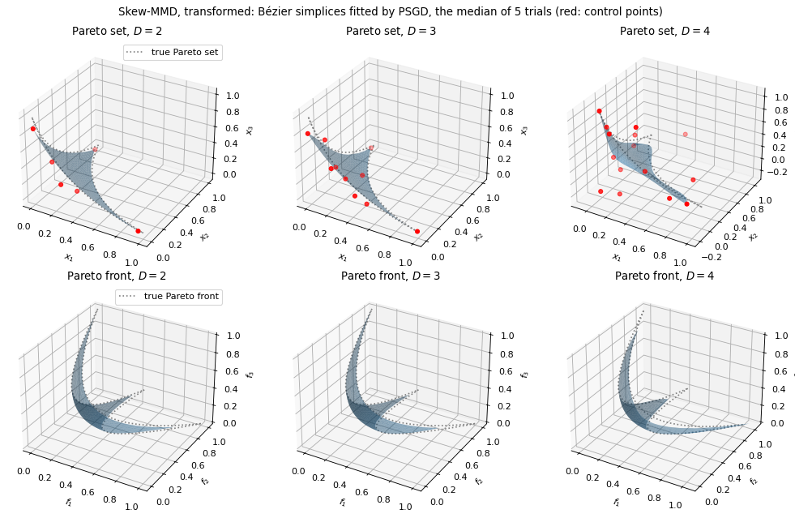
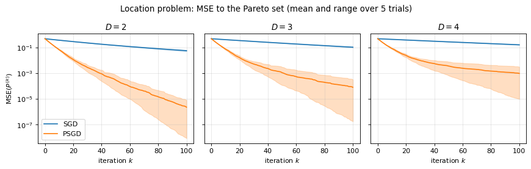

Objective minimization
Regression and differentiable objective minimization are separate problems:
import torch
from torch_bsf import BezierSpace, BezierModel, minimize, PreconditionedSGD
from torch_bsf.optimization import linear_scalarization
space = BezierSpace.simplex(1, degree=2)
initial = BezierModel(space, torch.zeros(space.n_controls, 1, dtype=torch.float64))
def objectives(x):
return torch.cat([(x-1)**2, (x+1)**2], dim=1)
result = minimize(initial, linear_scalarization(objectives), seed=7,
method=PreconditionedSGD(max_iter=300, gradient_tolerance=1e-6))
loss(predicted_values, points) returns one differentiable scalar per row.
minimize copies the initial model. Exact domain Gram preconditioning,
minibatches, quadratic penalties and explicit fixed controls are available.
The method does not require Lightning. Float16/bfloat16 initial models are copied
and promoted to float32 on the same device for basis evaluation, gradients
and metric solves. The returned model then has float32 coefficients.
History records pre-update losses and gradient norms. Iteration-budget
exhaustion and callback stops do not establish convergence. Only a checked
full-sample gradient tolerance or all-fixed problem yields success=True.
The final objective is evaluated on the complete fixed sample set.
The algorithm
Let \(f = (f_1, \ldots, f_M): \mathbb R^L \to \mathbb R^M\) be the objectives and \(b(\mathbf t \mid P) = P^\top \mathbf z(\mathbf t)\) a Bézier simplex of degree \(D\) on \(\Delta^{M-1}\), where \(\mathbf z(\mathbf t)\) is the vector of the Bernstein basis polynomials. The paper minimizes the linear scalarization weighted by the parameter itself, averaged over the simplex:
For strongly convex objectives, the minimizer of \(\mathbf t^\top f(\mathbf x)\) traces the whole Pareto set as \(\mathbf t\) moves on the simplex, so the minimizer of \(\mathcal L\) approximates the Pareto set, parametrized by the weight.
The expectation is replaced by the mean over \(n\) fixed samples \(\mathbf t_1, \ldots, \mathbf t_n\), and the control points are updated on minibatches \(B\) of them:
The preconditioner \(\Sigma^{-1}\) turns the step into the one that
minimizes the linearized loss plus
\(\frac{1}{2\alpha_k}\mathbb E_{\mathbf t}\|b(\mathbf t \mid P) - b(\mathbf t \mid P^{(k)})\|^2\):
it measures how far the surface moves rather than how far its control
points move. The paper proves that this converges faster than plain SGD
(\(\Sigma = I\)), whose steps are distorted by the ill-conditioning of the
Bernstein basis. gram_matrix() computes
\(\Sigma\) exactly, for the configured cell distribution.
Historical benchmark figures
The figures below were generated before the unified API migration. They illustrate the research problems and are not performance measurements of this release. The migrated script can generate fresh figures and metrics.
Benchmarks: SGD vs. PSGD
The script examples/sgd_benchmarks.py reproduces the experiments of
Section 5 of Hikima et al. [HKT+25] with minimize(),
comparing plain SGD (preconditioner="none") with the preconditioned SGD
of the paper (PSGD, preconditioner="gram"). The problems are implemented
from their definitions in the paper:
Bergou2020 [BDK21] (\(M = 2\), \(L = 2\)): \(f_1(\mathbf x) = (x_1 - 1)^2 + (x_1 - x_2)^2\) and \(f_2(\mathbf x) = (x_2 - 3)^2 + (x_1 - x_2)^2\).
Scaled-MED (\(M = 3\), \(L = 3\)): \(f_1(\mathbf x) = x_1^2 + 3(x_2 - 1)^2 + 2(x_3 - 1)^2\), \(f_2(\mathbf x) = 2(x_1 - 1)^2 + x_2^2 + 3(x_3 - 1)^2\) and \(f_3(\mathbf x) = 3(x_1 - 1)^2 + 2(x_2 - 1)^2 + (x_3 + 1)^2\).
Skew-MMD (\(M = 3\), \(L = 3\)): \(f_i(\mathbf x) = \|A_i(\mathbf x - \mathbf e_i)\|_2^{p_i}\) with \(A_1 = \operatorname{diag}(3/5, 4/5, 4/5)\), \(A_2 = \operatorname{diag}(4/5, 3/5, 4/5)\), \(A_3 = \operatorname{diag}(4/5, 4/5, 3/5)\) and \(p_i = \exp(2(i - 1)/(M - 1) - 1)\).
Skew-MMD, transformed (\(M = 3\), \(L = 3\), not in the paper): \(g_i(\mathbf x) = f_i(\mathbf x)^{2/p_i} = \|A_i(\mathbf x - \mathbf e_i)\|_2^2\) with the \(f_i\) of the skew-MMD, which has the same Pareto set (see Non-convex objectives: transforming the skew-MMD).
Location problem (\(M = 3\), \(L = 4\)): \(f_i(\mathbf x) = \|\mathbf x - \mathbf e_i\|_2^2\), whose Pareto set is the triangle spanned by \(\mathbf e_1, \mathbf e_2, \mathbf e_3\).
The settings are those of the paper: \(P_0 = O\), \(n = 100\) samples,
minibatches of \(m = 20\), \(K = 100\) iterations with the constant
step size \(\alpha = 0.05\), the degrees \(D \in \{2, 3, 4\}\), and 5
trials with different samples, SGD and PSGD sharing the samples of a trial.
The losses are recorded with callback as in
the explicit optimizer callback: the empirical loss on the
\(n\) samples and the generalization loss on 10,000 other samples. The
script plots with matplotlib and SciPy, which the plot extra installs. In
a clone of the repository, run
pip install -e ".[plot]"
python examples/sgd_benchmarks.py
to write the figures below to docs/_static/; it takes less than a minute
on a CPU.
For all the problems but the skew-MMD, the objectives are quadratic, so \(\mathcal L(P)\) is a quadratic function of the control points, and the script computes its minimizer \(P^*\) over the Bézier simplices of degree \(D\) exactly (by Newton’s method, on the \(n\) samples for the empirical loss and on the 10,000 samples for the generalization loss). The figures show the optimality gap \(\mathcal L(P^{(k)}) - \mathcal L(P^*)\), the mean over the trials as a line and the range as a band:

Fig. 5 Bergou2020: the optimality gap of the empirical (top) and generalization (bottom) losses.

Fig. 6 Scaled-MED: the optimality gap of the empirical (top) and generalization (bottom) losses.


Fig. 7 Location problem: the optimality gap of the empirical (top) and generalization (bottom) losses.


Fig. 8 Skew-MMD, transformed: the optimality gap of the empirical (top) and generalization (bottom) losses.
The loss of the skew-MMD is not convex and its minimizer has no closed form, so its figure shows the loss \(\mathcal L(P^{(k)})\) itself:

Fig. 9 Skew-MMD: the empirical (top) and generalization (bottom) losses.
PSGD decreases both losses much faster than SGD on every problem, with one exception discussed below. After 100 iterations, its optimality gap is two to five orders of magnitude smaller (e.g., \(6 \times 10^{-4}\) against \(2 \times 10^{-1}\) for Bergou2020 with \(D = 2\)), and the generalization loss follows the empirical one. The higher the degree, the slower SGD gets, because the Bernstein basis gets more ill-conditioned: the condition number of \(\Sigma\) of a Bézier triangle is 15, 56 and 210 for \(D = 2, 3, 4\). PSGD removes this dependence in its first iterations, which decrease the loss at almost the same rate for every degree, as the paper reports.
The exception is Scaled-MED with \(D = 4\): the gap of PSGD jumps up
during the iterations in two of the five trials, so that its mean ends above
that of SGD, although PSGD is ahead in the first 20 iterations and in the
other three trials. The paper proves the convergence of minibatch PSGD for
step sizes up to a bound proportional to
\(1 / \lambda_{\max}(\Sigma^{-1})\), which shrinks as the degree grows
(\(\lambda_{\max}(\Sigma^{-1})\) of a Bézier triangle is 90, 560 and 3150
for \(D = 2, 3, 4\)), and \(\alpha = 0.05\) is apparently beyond it
here: a minibatch whose samples miss part of the triangle gets its gradient
amplified along the directions where \(\Sigma\) is small. With \(\alpha = 0.03\), all
five trials converge. If the loss of PSGD jumps up, decrease step_size,
use step_decay="sqrt", or enlarge batch_size.
The other figures show the Pareto set and front approximated by PSGD after 100 iterations, in the trial of the median final empirical optimality gap (empirical loss for the skew-MMD), with the control points (red) and the boundary of the true Pareto set and front (dotted). For the location problem, the Pareto set lies in \(x_4 = 0\) and is drawn in \((x_1, x_2, x_3)\).

Fig. 10 Bergou2020: the approximated Pareto set (top) and front (bottom). The true ones are given by \(x_1^*(\mathbf t) = (t_1^2 + t_1 - 3) / (t_1^2 - t_1 - 1)\) and \(x_2^*(\mathbf t) = (3t_1^2 - t_1 - 3) / (t_1^2 - t_1 - 1)\).


Fig. 11 Scaled-MED: the approximated Pareto set (top) and front (bottom).

Fig. 12 Location problem: the approximated Pareto set (top) and front (bottom).


Fig. 13 Skew-MMD: the approximated Pareto set (top) and front (bottom).


Fig. 14 Skew-MMD, transformed: the approximated Pareto set (top) and front of \(g\) (bottom).
On Bergou2020, the end points of the curve, which correspond to the vertices of the simplex that uniform samples of \(\mathbf t\) rarely approach, converge the slowest. On the skew-MMD, the fitted surface leaves the true Pareto set, whereas on its transform it follows it; see Non-convex objectives: transforming the skew-MMD.
The last figures correspond to Figure 4 of Hikima et al. [HKT+25]: they compare how close the approximated Pareto set gets to the true one, by the mean squared error of Section 5.3 of the paper,
where \(\mathbf x^*(\mathbf t)\) is the minimizer of
\(\mathbf t^\top f(\mathbf x)\) given in closed form above and
\(\mathbf t_1, \dots, \mathbf t_N\) are the \(N = 10{,}000\) samples of
the generalization loss. It is recorded at
\(P^{(0)}, \dots, P^{(K)}\) in the same callback under
torch.no_grad(); at \(P^{(0)} = O\), it is the mean of
\(\|\mathbf x^*(\mathbf t_i)\|_2^2\). The script draws the MSE of the
location problem and Scaled-MED, as the paper does, and of Bergou2020 and the
transformed skew-MMD, whose Pareto sets are also known. As in the other figures, the band is the range over
the 5 trials, whereas the paper shows a 95% confidence interval.


Fig. 15 Location problem: the MSE to the true Pareto set.

Fig. 16 Scaled-MED: the MSE to the true Pareto set.

Fig. 17 Bergou2020: the MSE to the true Pareto set.

Fig. 18 Skew-MMD, transformed: the MSE to the true Pareto set.
The MSE follows the optimality gap. For the location problem, \(\mathbf t^\top f(\mathbf x) = \|\mathbf x - \mathbf x^*(\mathbf t)\|_2^2 + 1 - \|\mathbf x^*(\mathbf t)\|_2^2\) on the simplex, so the MSE equals the generalization optimality gap; \(\mathbf x^*\) is linear in \(\mathbf t\) and the MSE of PSGD keeps decreasing towards zero (to \(2 \times 10^{-6}\) after 100 iterations with \(D = 2\), against \(6 \times 10^{-2}\) for SGD). For Scaled-MED and Bergou2020, \(\mathbf x^*\) is a rational function that a Bézier simplex of degree \(D\) cannot represent exactly, so even the minimizer \(P^*\) of the generalization loss has a positive MSE, which decreases with the degree (\(6 \times 10^{-4}\), \(3 \times 10^{-5}\) and \(2 \times 10^{-6}\) for Scaled-MED with \(D = 2, 3, 4\)). The MSE of PSGD for Scaled-MED with \(D = 2\) levels off near this floor after about 30 iterations, while SGD is still two orders of magnitude above it. The divergence of PSGD in two trials of Scaled-MED with \(D = 4\) discussed above shows up in the MSE as well: the mean MSE of PSGD ends at 2.6, above the 0.15 of SGD, because one trial ends at 13 and another rises from \(3 \times 10^{-4}\) to \(2 \times 10^{-3}\), whereas the other three trials end below \(10^{-3}\).
Non-convex objectives: transforming the skew-MMD
On the skew-MMD, \(f_1\) is not convex (\(p_1 = e^{-1} < 1\)), and the linear scalarization does not trace its Pareto set: the paper uses this problem only for the convergence comparison. Its Pareto set is known all the same. An increasing transform \(h_i\) of each objective does not change which points dominate which, so the objectives \(h_i(f_i)\) have the same Pareto set as \(f_i\). The objectives of the skew-MMD are \(f_i = g_i^{p_i / 2}\) with the strongly convex quadratics \(g_i(\mathbf x) = \|A_i(\mathbf x - \mathbf e_i)\|_2^2\), so \(h_i(y) = y^{2/p_i}\) turns them into \(g_i\), whose linear scalarization has the minimizer
where \(a_{i,l}\) are the diagonal entries of \(A_i\). As \(\mathbf t\) moves on the simplex, \(\mathbf x^*(\mathbf t)\) traces the Pareto set of both \(f\) and \(g\), and the script draws it as the true Pareto set of both problems. On the original objectives, the global minimizer of \(\mathbf t^\top f(\mathbf x)\) collapses to the vertex \(\mathbf e_1\) for 28% of the uniform weights and to \(\mathbf e_2\) for 16%, so the linear scalarization reaches only part of the Pareto set and jumps between its parts. With \(g\), the loss is quadratic in the control points, as for the other problems: the convergence analysis of the paper applies, and the optimality gap and the MSE can be computed.
The two parametrizations differ, so the script compares them by the mean squared distance from the fitted surface to the Pareto set, \(\frac{1}{N}\sum_{i=1}^N \min_{\mathbf x \in X^*} \|b(\mathbf t_i \mid P) - \mathbf x\|_2^2\), on the first \(N = 1{,}000\) samples of the generalization loss, where \(X^*\) is the image of a fine grid of the simplex under \(\mathbf x^*\). It prints the mean over the 5 trials after 100 iterations:
Degree |
Skew-MMD, PSGD |
Skew-MMD, transformed, PSGD |
|---|---|---|
\(D = 2\) |
\(2.3 \times 10^{-3}\) |
\(9.3 \times 10^{-5}\) |
\(D = 3\) |
\(2.0 \times 10^{-3}\) |
\(2.3 \times 10^{-4}\) |
\(D = 4\) |
\(2.7 \times 10^{-3}\) |
\(8.1 \times 10^{-4}\) |
The transform brings the surface 3 to 25 times closer to the Pareto set; the
higher degrees have not converged in 100 iterations yet (see the optimality
gap above). To fit a model to the Pareto set of objectives that are increasing
functions of convex ones, pass the transformed objectives to
linear_scalarization():
p = torch.exp(torch.arange(3.0) - 1) # the powers p_i of the skew-MMD
def transformed(x):
return skew_mmd(x) ** (2 / p) # h_i(f_i) = f_i^(2 / p_i)
loss = linear_scalarization(transformed)
The model is then parametrized by the weights of \(h(f)\) instead of those of \(f\). Where \(f_i\) vanishes, as at \(\mathbf x = \mathbf e_i\) here, the gradient of the composition may be undefined; write \(g_i\) directly instead, as the script does. A Chebyshev scalarization \(\max_i t_i f_i(\mathbf x)\) also reaches every Pareto point of a non-convex problem, but its minimizer stays on the boundary of the Pareto set for a whole band of weights near the boundary of the simplex, a kink that a Bézier simplex of low degree fits poorly.